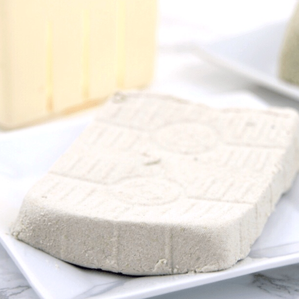

Home
Hempfu (Hemp Seed Tofu)
I decided that I would have to come up with a DIY hempfu recipe on my own…
and it was surprisingly easy!
It required a few specialized tools and literally three ingredients, but
within a couple of hours,
I had an awesome soy-free tofu that is rich in protein and omega-3 fatty
acids. What more could you want?

Ingredients
- 1 cup (160g) hulled hemp seeds
- 3.5 cups (840ml) water
- 1/2 tsp nigari, dissolved in 1/2 cup water
(optional, if coagulation doesn’t start on its own!)
OR 1 tablespoon of either apple cider vinegar or lemon juice
Instructions
- Blend the water and hemp seeds in a high-powered blender until
totally smooth. This was about 30 seconds on 6-7 for my blender.
- Strain the mixture using the larger-sized mesh bag.
It’s the one that is going to feel rougher to the touch.
Be sure to squeeze out as much of the milk as possible,
until the remaining fibrous bits are crumbly and relatively dry.
I save this part to use as flour in baked goods.
- Heat the hemp seed milk in a medium saucepan on medium heat until it comes
to a gentle boil. You may notice some curdling already at this point.
- Remove the mixture from the heat and let cool for a few minutes. If there
are curds forming already, proceed to the next step. If no curds are present,
then stir in the nigari mixture/lemon juice/vinegar and let sit for around
twenty minutes.
- Line your tofu press with the finer mesh nut milk bag.
- Place the tofu press into a bowl/your sink or over a rimmed baking tray
so that any liquid that drains doesn’t just spill all over your counter
and scoop the curd mixture into the cheesecloth. I used a mesh scoop for
this, as that seemed to help it drain the most.
- Fold one side of the mesh bag over the curds, and place the top of the
tofu press over this. Lightly press it to help shape the curds initially.
Weight the press down with something like a jar of nut butter or a couple
of cans of beans, and let this sit for 30-45 minutes, until most of the
water is released.
- Chill the tofu in the block in the fridge for about a half hour so it
can set up before removing it from the press and bag.
- Use as you would use any tofu
Recipe credit foreatssake.net